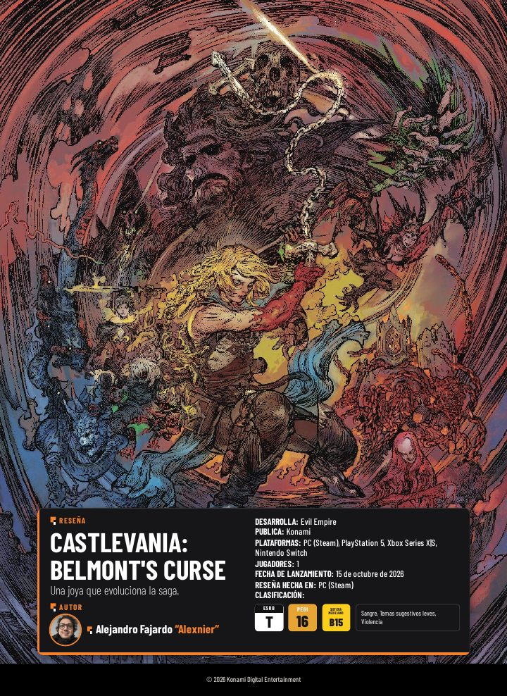
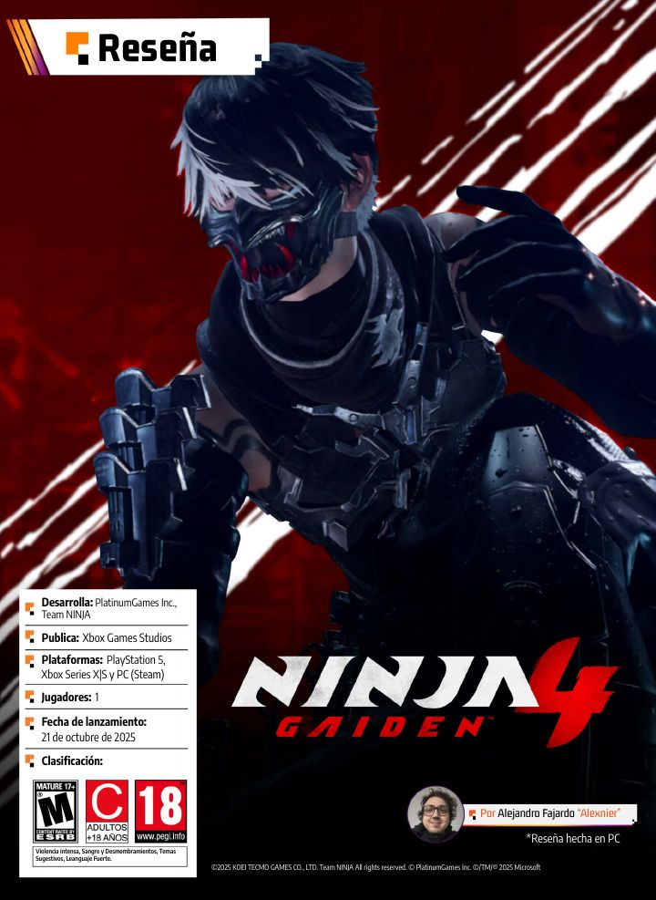
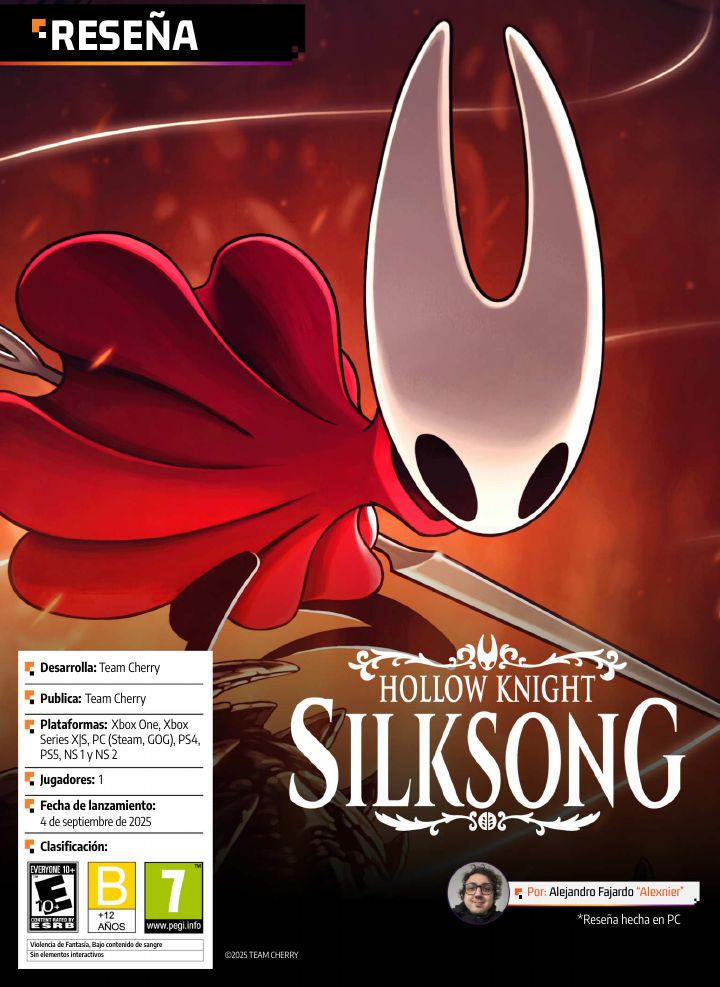

Joya dela corona Reseña · Game Effect 53
Castlevania: Belmont's Curse
«Castlevania: Belmont's Curse es una joya que todo fan de la saga debe probar. Es una evolución de lo que deberíamos ver en la saga en 2D.»Leer en Game Effect 53 →
Canal mexicano de videojuegos retro y modernos: directos todos los días, platicando con el chat y con Lumi, la chica de los 90 que me acompaña en cada partida.
▶ Ver el canal
La hora de tu ciudad se calcula sola (con horario de verano).
Todos los directos se quedan en el canal. Aquí arriba está el más reciente y abajo los anteriores; en el canal están todos.
▶ Todos los directos
Lumi (Rumi Kisaragi) es una chica de 21 años que se quedó en la red en noviembre de 1998. Ama el City Pop, Final Fantasy VII y Evangelion, es sarcástica con cariño y está en cada directo: platica con el chat, me molesta cuando muero y hace de todo para que el directo esté vivo.
lumi di: …Lo repite en voz (con filtro, ¡pórtense bien!)1 · 2 · 3 · 4Vota en sus encuestas!clipMarca un momento para los clips!pregunta …Una pregunta para mí; Lumi me la lee!muerte · !vencidoCuenta mis muertes y jefes en pantalla!cantarLumi canta!comandosTodo lo demásPlayeras y sudaderas del canal en Niño Gamer, con envíos a todo México.
Ver toda la tiendaAdemás de jugar en directo, escribo reseñas, avances y más para Game Effect, la revista digital de videojuegos de México.

Joya de«Castlevania: Belmont's Curse es una joya que todo fan de la saga debe probar. Es una evolución de lo que deberíamos ver en la saga en 2D.»Leer en Game Effect 53 →
 ¡Juegazo!
Reseña · Game Effect 51
¡Juegazo!
Reseña · Game Effect 51
«…este remake no reemplaza para nada a la versión original, pero es un regalazo poder jugarlo, y para mí supera con creces a las versiones anteriores.»Leer en Game Effect 51 →

8.5 Reseña · Game Effect 46«Ninja Gaiden 4 es la evolución que la franquicia necesitaba. […] No es un juego perfecto, pero sí sienta las bases para pulir lo necesario hacia el futuro.»Leer en Game Effect 46 →
 9.0
Reseña · Game Effect 45
9.0
Reseña · Game Effect 45
«Silent Hill f es la definición de cómo tomar una saga con un concepto muy arraigado desde su primer título y arriesgarse a cambiarlo para traer algo nuevo y fresco a la franquicia.»Leer en Game Effect 45 →

9.5 Reseña · Game Effect 44«Silksong es un juego que, a pesar de todo el hype que pudo haber tenido desde su anuncio, resulta ser una obra excelente y un ejemplo de cómo se puede crear algo sobresaliente con recursos limitados.»Leer en Game Effect 44 →
Contenido gratis de Lumi y, si quieres, un tip de $1 al mes. Tu apoyo hace posible el canal.
ApoyarLa revista digital de videojuegos de México: reseñas, noticias, retro y entrevistas.
Leerla gratisLumichan es la herramienta de escritorio personal de Alexnier para preparar el contenido del canal: miniaturas, anuncios de directos, clips de los mejores momentos y sus textos. Con permiso del propio Alexnier, sube sus clips a sus borradores de TikTok para que él los revise y los publique desde la app de TikTok, y publica en sus propias páginas de redes sociales.
No es una app pública: solo la usa Alexnier con sus propias cuentas. Términos · Privacidad